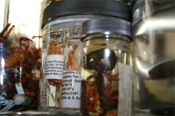
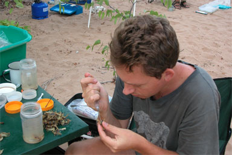
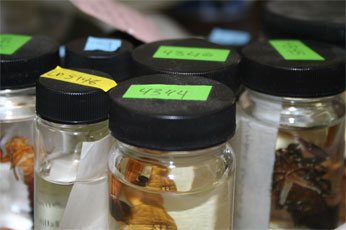

Tissue Collections
As part of our research on the molecular systematics of scorpions, a synoptic collection of scorpion tissues, comprising ca. 2000 tissue samples and associated vouchers (nearly a quarter of all described scorpion species and half of all described genera) has accumulated through fieldwork and donations or exchanges with colleagues around the world. The collection is continually augmented and includes sizable holdings of tissue samples from Araneae (for the ATOL Spider Phylogeny project), Amblypygi, Chilopoda, Diplopoda, Opiliones, Palpigradi, Ricinulei, Schizomida, Solifugae and Uropygi, in addition to Scorpiones. Among other countries, this material originates from Argentina, Australia, Benin, Bolivia, Brazil, Bulgaria, Cameroon, Chile, Dominican Republic, France, French Guiana, Guinea-Bissau, Iran, Israel,
Italy, Jamaica, Kazakhstan, Madagascar, Martinique, Mexico, Morocco, Myanmar, Namibia, New Caledonia, New Guinea, New Zealand, Nicaragua, Peru, Philippines, Puerto Rico, Senegal, Seychelles, Taiwan, Tanzania, Thailand, Turkey, South Africa, Uruguay, the U.S.A., Uzbekistan, and Yemen. These collections are currently being stored at -20�C in large freezers in the Division of Invertebrate Zoology and will eventually be transferred to the
Ambrose Monell Collection for Molecular and Microbial Research of the AMNH for permanent storage.

Preparing Tissue Samples
Tissue samples: If refrigeration facilities are available, place each specimen into a separate container of 95-100% ethanol (preferably analytical grade), and place this directly into the freezer (-20�C). Ensure that the volume of ethanol in the vessel containing each specimen is at least five times the volume of the specimen. Leave the specimens in the freezer for at least 7 days before dispatching. Replace the (now diluted) ethanol before dispatching.
If refrigeration facilities are unavailable, place each specimen into a separate container of 95-100% ethanol (preferably analytical grade) and keep as cool as possible. If specimens are large and/or heavily sclerotized, remove a leg(s) from one side of the specimen and place into a small vial of 95-100% ethanol. Then inject the specimen, or make an incision, allowing the ethanol to diffuse into the tissues. Use a sterile scalpel or needle for each dissection/injection, and clean forceps in ethanol after each dissection. Place the specimen in a large vessel containing at least five times the volume of the specimen. Replace the ethanol in each container within 24 to 48 hours, and thereafter if it appears discolored. Larger samples may require ethanol to be replaced several times. Make sure to use labels to associate the vial with the larger vessel.

Vouchers: If intact specimens are used as vouchers, preserve these appropriately for morphological examination. If genitalia are used as vouchers, they must be dissected by the individual submitting the sample to the AMNH and placed in a microvial within the same vial as the tissue sample or in a separate, clearly labelled vial.

Documentation and archiving: All specimens and tissue samples must contain a label, indicating the following provenance data: country, state, region or province, district or county, locality, geographical coordinates (degrees and minutes or decimal degrees), collector, date, habitat, collection method. Labels should be typed, printed or legibly written in indelible ink.
All specimens and tissue samples must be authoritatively identified, preferably to species (if possible) and sexed, with indication whether or not the specimen is adult. If available, the species identification (including authority and date) and sex, as well as the name of the individual responsible for the identification may appear on a separate label in the vial with the specimen/tissue sample. Provenance data and identifications appearing on labels may also be sent to the AMNH in a spreadsheet.